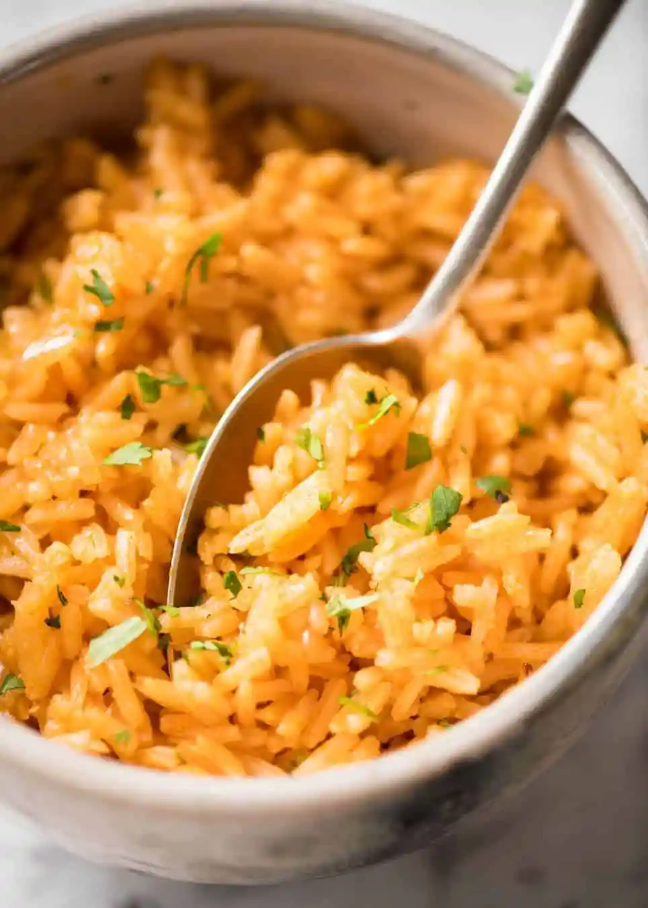

The Classic Side Dish: Red Rice

Description
My favorite Mexican side dish. This is a staple in every Mexican household. THere are many variations, but this is the version my mother taught me. You'll see why it's such a classic if you give it a chance.
Ingredients
- 1 Cup Long Grain Rice
- 3 Cloves of Garlic, minced
- 1/2 White Onion, finely chopped
- 1 8 oz can Tomato Sauce
- 1 Tbs Chicken Bouilon
- 1/4 Cup Neutral Oil
- Salt to Taste
- 1.5 Cups Water
Steps
- Heat up oil at Medium-High heat.
- Add onions and garlic and cook for one minute.
- Add rice and stir constantly until browned and toasted.
- Add can of tomato and mix thoroughly.
- Add water, bouillon, and salt to taste.
- Bring liquid to a boil and reduce heat to simmer.
- Cook with lid on for 20 minutes and pull off heat.
- Let rice rest for 10 minutes then enjoy!